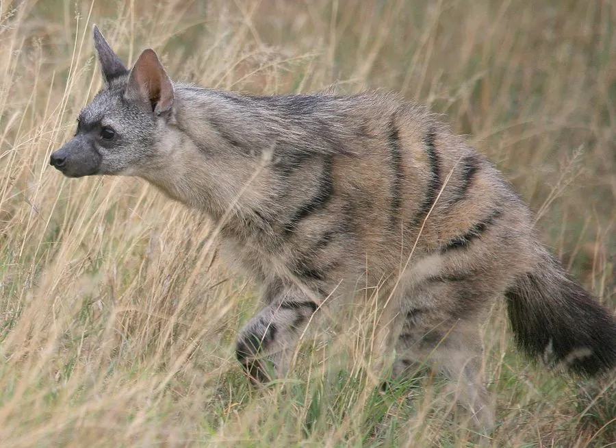

哺乳动物 · 动物界
土狼 Proteles cristata

非洲东部的食蚁鬣狗，体型小而吻部细弱，主要靠长舌舔食白蚁，遇险时竖起鬃毛假装更大以吓退敌人。
- 分类
- 门脊索动物门纲哺乳纲目食肉目科鬣狗科属土狼属
- 栖息环境
- 非洲东部和南部的稀树草原与灌丛，白蚁资源丰富的干燥地区
- 地理分布
- 非洲东部和南部，从埃塞俄比亚、肯尼亚到南非
- 保护级别
- IUCN 无危（LC）
物种志
土狼体长 0.55–0.8 米，尾长 0.2–0.3 米，体重 7–15 kg，外形像小型的鬣狗。它的被毛为浅黄至红褐色，身体两侧和四肢有深色横纹，颈背有可竖起的鬃毛；吻部细尖，牙齿退化，前爪强壮，适合挖掘。
土狼分布于非洲东部和南部的稀树草原和灌丛，栖息于干燥开阔、白蚁资源丰富的地区。它几乎只吃白蚁，一夜间可将长舌伸入成千上万个蚁道舔食白蚁，每天取食量可达数万只；吻部和牙齿已因食性而退化。土狼多为独居或成对活动，多在夜间活动，白天躲在洞穴中。遇敌时会竖起鬃毛、弓背装大，发出嘶吼吓退对手，也会从肛门腺释放气味；它有时会被斑鬣狗捕食。雌兽妊娠期约 90 天，每胎 2–4 仔。土狼种群总体稳定。
形态与习性
- 食性几乎只吃白蚁，一夜可舔食数万只
- 体长0.55–0.8 m，尾长 0.2–0.3 m
- 体重7–15 kg
- 寿命野外约 8–15 年
- 繁殖妊娠期约 90 天，每胎 2–4 仔
- 防御遇敌时竖起鬃毛、弓背装大并嘶吼
- 牙齿牙齿明显退化，吻部细弱
趣味知识
- 土狼几乎只吃白蚁，一夜能舔食数万只。
- 遇到斑鬣狗时它会竖起鬃毛、弓起背，让自己显得更大。
- 土狼的牙齿因长期食蚁而退化，吻部也明显变细。
- 它属于鬣狗科，但食性与鬣狗科的其它成员截然不同。